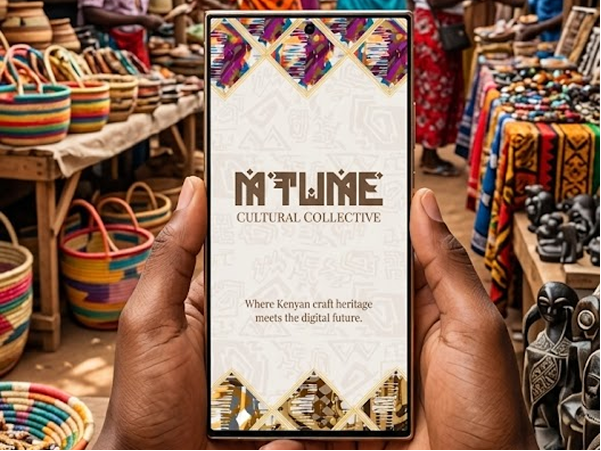
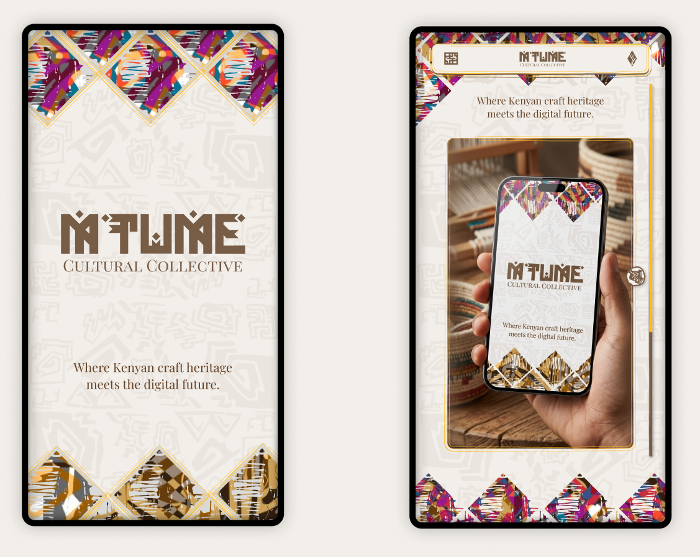
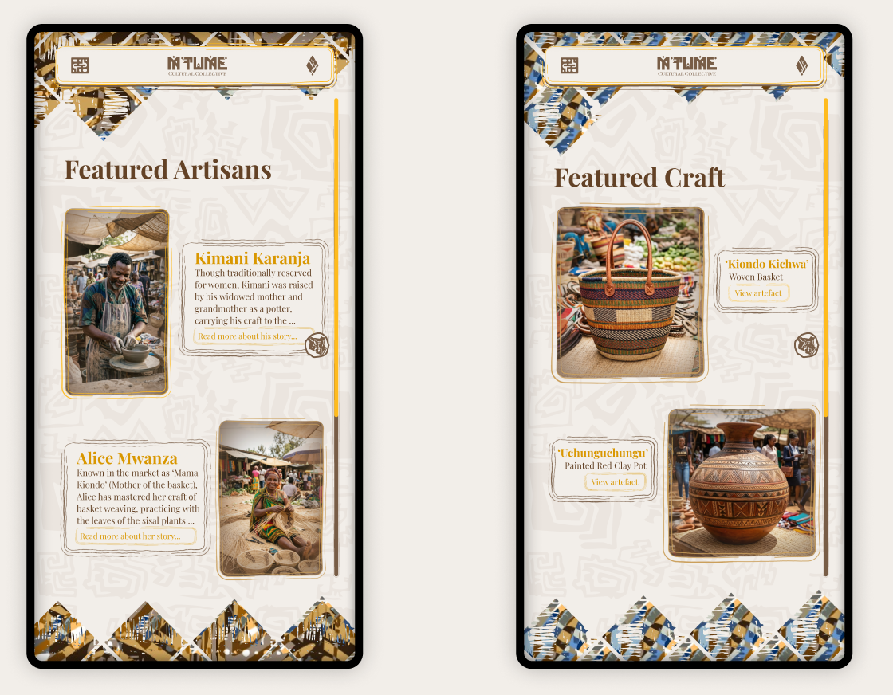
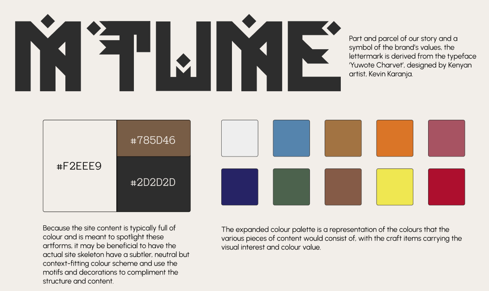
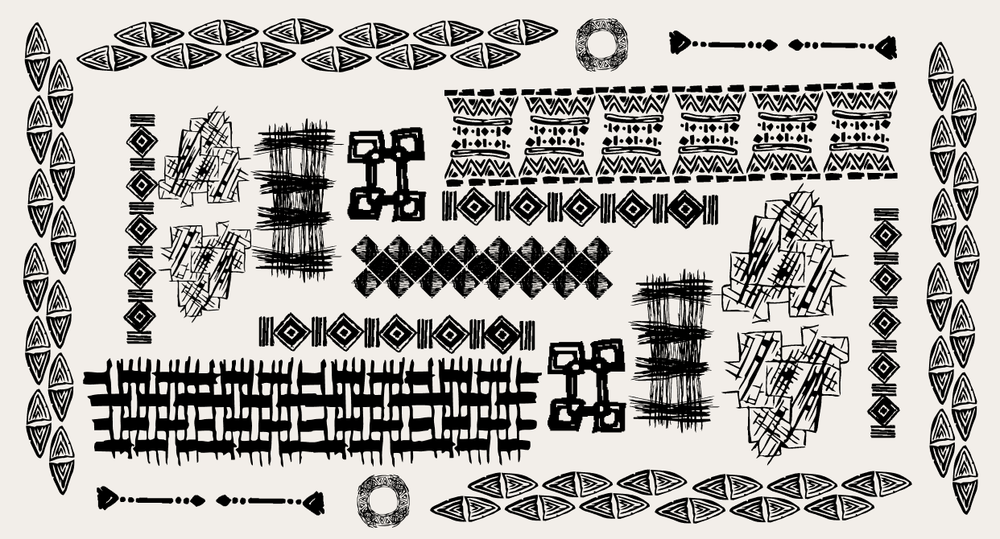
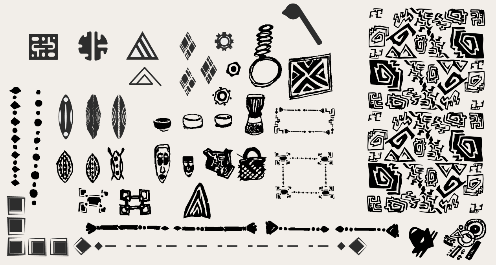
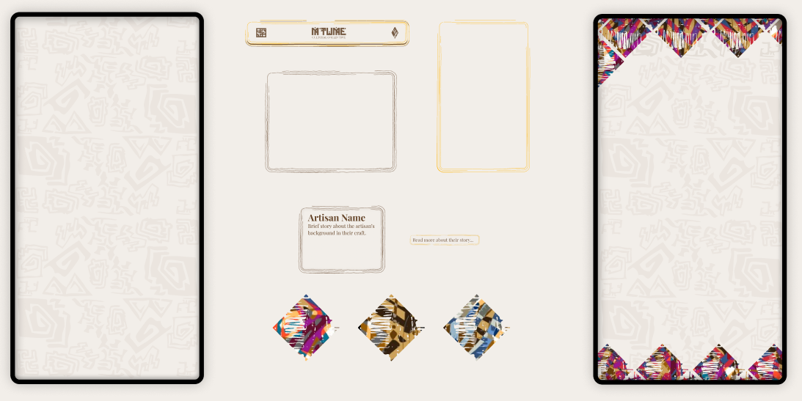

Cultural Identity & Digital Experiences

Project Brief
Traditional Kenyan artisan crafts are central to cultural identity and are commonly experienced in vibrant open-air markets. As the silicon savanna that is Nairobi grows into a digital hub in Africa, daily activity moves online, fewer people regularly visit these physical spaces, reducing visibility for artisans and limiting opportunities for people to engage with craft culture.
A digital platform has the potential to extend the market scope of Kenyan craft by adapting to the customer-base - extending the discovery and cultural storytelling of these markets into the online spaces where modern audiences already spend their time.
MTUME Cultural Collective
is a streamlined digital platform focused primarily on spotlighting Kenyan artisans, craft and their stories, combining traditional motifs with Afrofuturist-inspired visuals to create a modern, culturally rooted online experience.
HERO & LANDING PAGES

FEATURED PAGES

BRANDING

ILLUSTRATIONS & PATTERNS


This library covers a variety of illustrated patterns to be used across the brand and site, as the basis of the cultural look and feel.
SITE ELEMENTS

Page container styles, background patterns, motifs, navbars, icons, and other components that create the site interface.
BRAND MOCKUPS
PROCESS
My design process was as follows. It all started with research into the craft culture of Kenya, to define my environment, collect samples of the craft, and establish a visual identity for the brand.
The patterns were my biggest focus, as they are the key to unlocking the cultural look and feel, and I wanted to create a cohesive experience across the site, using the patterns and motifs to tie everythign together. The process shows the building of the motifs and patterns, through their development and the selection of the primary patterns that tie into the logo, as well as the Afrofuturist deign angle.
I then moved on to the design of the site, starting with the homepage and landing page, and then moving on to the inner pages. I designed the site elements and patterns in parallel, to create a cohesive look and feel across the site.
With the brand and site deisgns in place, I created mockups of the brand itself in use, to show how the brand would come to life in the real world, and to create a more tangible experience of the brand that is meant to serve as an iconic representation of the culture and craft it uplifts.